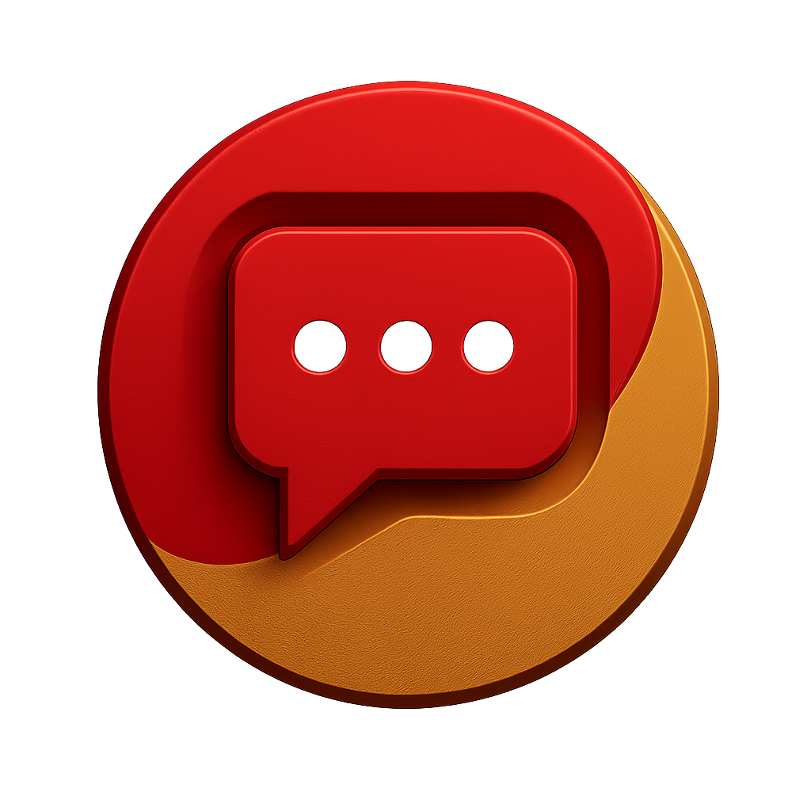

 <!-- Draggable Chat Icon with Click Protection -->
<div id="chatIcon" style="
  position: fixed;
  width: 60px;
  height: 60px;
  border-radius: 50%;
  cursor: grab;
  z-index: 9999;
  display: flex;
  align-items: center;
  justify-content: center;
">
  <!-- Rotating Ring -->
  <div class="rotating-ring"></div>

  <!-- Clickable Chat Button -->
  <a id="chatLink" href="userside.html" style="
    position: absolute;
    width: 46px;
    height: 46px;
    border-radius: 50%;
    overflow: hidden;
    background: white;
    display: flex;
    align-items: center;
    justify-content: center;
    z-index: 2;
  ">
    
  </a>
</div>

<style>
  .rotating-ring {
    position: absolute;
    width: 60px;
    height: 60px;
    border-radius: 50%;
    border: 4px solid transparent;
    border-top: 4px solid red;
    border-right: 4px solid gold;
    animation: spinRing 2s linear infinite;
    box-shadow: 0 0 8px red;
    z-index: 1;
  }

  @keyframes spinRing {
    0% { transform: rotate(0deg); }
    100% { transform: rotate(360deg); }
  }
</style>

<script>
  const chatIcon = document.getElementById('chatIcon');
  const chatLink = document.getElementById('chatLink');
  let isDragging = false, offsetX = 0, offsetY = 0;
  let hasMoved = false;

  // Restore saved position
  const saved = JSON.parse(localStorage.getItem('chatIconPos'));
  if (saved) {
    chatIcon.style.left = saved.x + 'px';
    chatIcon.style.top = saved.y + 'px';
  } else {
    chatIcon.style.left = '20px';
    chatIcon.style.top = '70%';
  }

  chatIcon.addEventListener('mousedown', (e) => {
    isDragging = true;
    hasMoved = false;
    offsetX = e.clientX - chatIcon.offsetLeft;
    offsetY = e.clientY - chatIcon.offsetTop;
    chatIcon.style.cursor = 'grabbing';
  });

  document.addEventListener('mousemove', (e) => {
    if (isDragging) {
      hasMoved = true;
      chatIcon.style.left = `${e.clientX - offsetX}px`;
      chatIcon.style.top = `${e.clientY - offsetY}px`;
    }
  });

  document.addEventListener('mouseup', (e) => {
    if (isDragging) {
      isDragging = false;
      chatIcon.style.cursor = 'grab';

      // Save final position
      const pos = {
        x: chatIcon.offsetLeft,
        y: chatIcon.offsetTop
      };
      localStorage.setItem('chatIconPos', JSON.stringify(pos));

      // Prevent accidental click
      if (hasMoved) {
        chatLink.style.pointerEvents = "none";
        setTimeout(() => {
          chatLink.style.pointerEvents = "auto";
        }, 100); // click re-enable after drag ends
      }
    }
  });

  // Optional: prevent link open if drag just finished
  chatLink.addEventListener('click', (e) => {
    if (hasMoved) {
      e.preventDefault();
      hasMoved = false;
    }
  });
</script>
